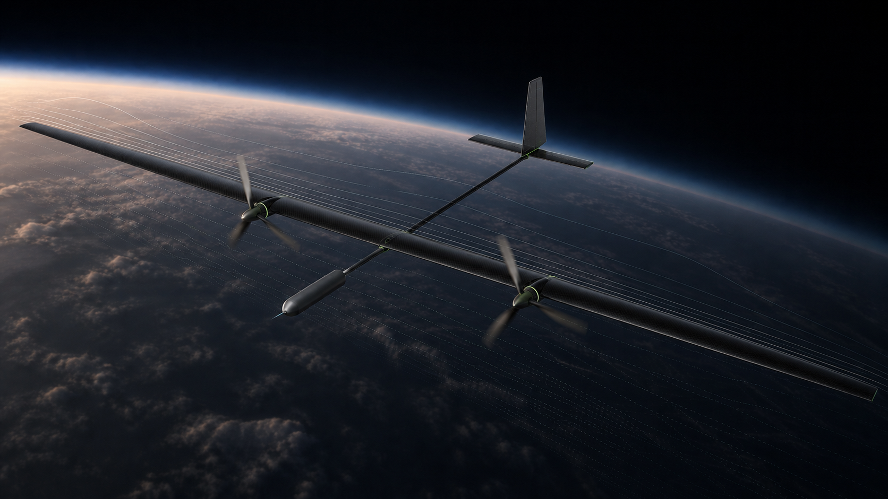

Persistent
Designed to remain on station and keep research data moving beyond a short aircraft sortie.

keenori / AURA programme
AURA is being developed to operate at 22 km and remain on station using solar energy. Its first mission: make research and data relay for IoT and autonomous systems faster to deploy, locally controlled and accessible beyond fixed infrastructure.
02 / The aircraft
At this altitude, one aircraft can maintain line-of-sight over a broad area while remaining much closer to users than a satellite. It becomes one airborne node linking sensors, ground stations and autonomous systems.
03 / Why keep an aircraft there?
Satellites provide enormous reach, but they are not always the right infrastructure for a local mission. A high-altitude aircraft adds a deployable layer: persistent research and data relay centred on the region that needs it.
Designed to remain on station and keep research data moving beyond a short aircraft sortie.
Coverage can be positioned over a region without first building an extensive ground network.
A dedicated aircraft can become an operator-controlled network for IoT and autonomous systems.
One aircraft can be a data relay. Several aircraft can become an accessible private regional network.
04 / How we are building it
keenori_dt is our engineering environment for aircraft geometry, parameters, aerodynamic analysis and design iteration. It connects research to the configuration we can actually build.
In-house aerodynamics
AURA uses airfoil profiles developed in-house for the requirements of high-altitude, long-endurance flight. This is the current inner-wing profile—not a decorative silhouette.
05 / Where this can go
We see high-altitude solar aircraft as a new layer between terrestrial infrastructure and satellites — deployable where persistent coverage, accessible data and local control matter.
06 / keenori
Keenori is an independent engineering R&D company in Ukraine. We are developing a high-altitude solar aircraft and the digital tools behind it to make persistent research and data relay practical, deployable and more accessible.
No grand promises. We are building it step by step.